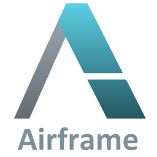

Overview

Airframe is a collection of essential building blocks for writing full-fledged applications in Scala and Scala.js.
Usage Guides
Scala is a quite powerful programming language. One of the benefits of Scala is it can utilize libraries in Java ecosystem. Existing libraries for Java, however, are not always the best choices if you are primarily writing code in Scala. For example, some libraries have performance overhead for converting Java collections into Scala collections, and their interfaces might not be well-suited to using them from Scala, etc.
Airframe has several modules that can replace commonly-used Java libraries to provide the same functionality in Scala. For example, you may have used libraries like slf4j, Google Guice, Jackson, etc. If you are familiar with these libraries, you will be surprised how Airframe can simplify your code compared to using these libraries designed for Java.
In the following sections, we will see several examples of Airframe modules that will enrich your application development experience in Scala.
Logging
For adding application logging, use airframe-log library.
slf4j and log4j are commonly used logging libraries in Java, but they are not fully utilizing the strength of Scala for enhancing log messages. airframe-log is a new logging library designed for Scala, which is programatically configurable and supports showing the source code locations. Seeing the line number where the debug message is produced will significantly save your time for debugging your applications.
To start logging with airframe-log, just extend wvlet.log.LogSupport and use trace/debug/info/warn/error logging methods. airframe-log uses Scala Macros to remove the performance overhead for generating debug log messages unless you set Logger.setDefaultLogLevel(LogLevel.DEBUG):
import wvlet.log.LogSupport
class MyApp extends LogSupport {
info("Hello airframe-log!")
// If the log level is INFO, this will produce no message and has no performance overhead.
debug("debug log message")
}
For more background, see also: Airframe Log: A Modern Logging Library for Scala
Object Serialization
If you need to store object data to disks, or send them to remote machines (e.g., Spark applications), use airframe-codec, which is a MessagePack-based schema-on-read data serialization library.
Jackson is a JSON-based data serialization library and supports mapping between JSON and classes. To control the mapping to objects, you need to add @JSONProperty annotation and configure ObjectMapper.
airframe-codec simplifies this process so that you can use case classes in Scala without any annotations. For producing compact binaries of your data, it also supports MessagePack format as well as JSON.
case class Person(id:Int, name:String)
// Create a codec for serializing your model classes
val codec = MessageCodec.of[Person]
// Serialize in JSON or MessagePack
val a = Person(1, "Ann")
val json = codec.toJson() // {"id":1,"name":"Ann"}
val msgpack = codec.toMsgPack() // MessagePack ArrayValue: [1,"name"]
// Deserialize from JSON or MessagePack
codec.fromJson(json) // Person(1, "Ann")
codec.fromMsgPack(msgpack) // Person(1, "Ann")
Internally, airframe-codec uses airframe-surface to extract type information from Scala classes.
Schema-On-Read Conversion
airframe-codec adjusts input data types according to the target object types. This schema-on-read data conversion is quite powerful for mapping various types of input data (e.g., CSV, JSON, etc.) into Scala case classes.
val json = """{"id":"2", "name":"Bob"}"""
// "2" (String) value will be converted to 2 (Int)
codec.fromJson(json) // Person(2, "Bob")
Mapping between MessagePack and objects can be performed by combining codecs for individual parameter types:

Querying JSON and MessagePack Data
airframe-codec can be used for extracting data from JSON and MessagePack data. For example, if you have the following JSON data:
[
{"id":1, "name":"xxx", "address":["aaa", "bbb", ...]},
{"id":2, "name":"yyy", "address":["ccc", "ddd", ...]}
]
You can extract only the ids and the addresses from this JSON by defining a case class matching a pattern you want to extract:
case class AddressQuery(id:Int, address:Seq[String])
MessageCodec.of[Seq[AddressQuery]].fromJson(json)
// This code extracts:
// Seq(AddressQuery(1, Seq("aaa","bbb")), AddressQuery(2, Seq["ccc","ddd"]))
Web Servers and Clients
There are tons of web frameworks for developing web services in Java and Scala. We have designed airframe-http so that we can minimize the learning cost in developing REST API servers and clients in Scala.
airframe-http defines REST API by using regular Scala functions with @Endpoint annotation for specifying HTTP method types and request paths. Mapping from HTTP requests with JSON (or MessagePack) body contents into Scala functions are automatically handled in the framework, so you don't need to worry about manipulating JSON requests and respones.
Here is an example REST API definition written in airframe-http:
// Model classes
case class ServerInfo(version:String)
case class User(id:String, name:String)
// Web server definition
trait MyApp {
@Endpoint(method = HttpMethod.GET, path = "/v1/info")
def serverInfo: ServerInfo = ServerInfo(version = "1.0")
@Endpoint(method = HttpMethod.POST, path = "/v1/user")
def addUser(user:User): User = {
// Add the given user to a database
user
}
}
Other than @Endpoint annotations, this is the same with regular Scala class definition.
A client code to access this API is also simple like this:
// Accessing the server using an http client
client.get[ServerInfo]("/v1/info") // ServerInfo("1.0")
client.post("/v1/user", User(1, "Ann")) // User(1, "Ann")
Mapping from HTTP responses to case classes is handled by airframe-codec.
Dependency Injection
Dependency injection (Wikipedia) is a design pattern for simplifying object instantiation; Instead of manually passing all necessary objects (dependencies) into the constructor argument, DI framework builds the object on your behalf.
When developing applications with many module classes and configuration objects, defining modules to use and injecting these modules by framework is quite helpful in terms of reliability and testability.
For more details, see:
Retry and Rate Control
airframe-control provides a basic retry mechanism like failsafe library in Java.
Command-Line Parser
Handling command-line options is not trivial when you need to support a lot of options, nested commands, data type conversions (e.g., string to Int/Double/Boolean conversions, accepting Option[_] types for missing parameters), etc.
airframe-launcher is a command line parser library that can instanciate command classes with @option and @command annotaions:
class MyApp(@option(prefix = "-h,--help", description = "display help messages", isHelp = true)
help: Boolean = false,
@option(prefix = "-p", description = "port number")
port: Int = 8080) {
@command(isDefault = true)
def default: Unit = {
println(s"Hello airframe. port:${port}")
}
}
Launcher.execute[MyApp]("-p 1000")
This also helps generating help message of your applications:
Launcher.execute[MyApp]("--help")
This command will show:
usage: myapp [options]
[options]
-p [PORT] port number
-h, --help show help messages
build.sbt
Airframe is a collection of essential libraries. Add necessary modules for your applications to your libraryDependencies setting in build.sbt file.


build.sbt
val AIRFRAME_VERSION="(version)"
# For Scala 2.12, and 2.13
libraryDependencies ++= Seq(
"org.wvlet.airframe" %% "airframe" % AIRFRAME_VERSION, // Dependency injection
"org.wvlet.airframe" %% "airframe-codec" % AIRFRAME_VERSION, // MessagePack-based schema-on-read codec
"org.wvlet.airframe" %% "airframe-config" % AIRFRAME_VERSION, // YAML-based configuration
"org.wvlet.airframe" %% "airframe-control" % AIRFRAME_VERSION, // Library for retryable execution
"org.wvlet.airframe" %% "airframe-http" % AIRFRAME_VERSION, // HTTP REST API
"org.wvlet.airframe" %% "airframe-http-finagle" % AIRFRAME_VERSION, // HTTP server (Finagle backend)
"org.wvlet.airframe" %% "airframe-http-recorder" % AIRFRAME_VERSION, // HTTP recorder and replayer
"org.wvlet.airframe" %% "airframe-jmx" % AIRFRAME_VERSION, // JMX monitoring
"org.wvlet.airframe" %% "airframe-jdbc" % AIRFRAME_VERSION, // JDBC connection pool
"org.wvlet.airframe" %% "airframe-json" % AIRFRAME_VERSION, // Pure Scala JSON parser
"org.wvlet.airframe" %% "airframe-launcher" % AIRFRAME_VERSION, // Command-line program launcher
"org.wvlet.airframe" %% "airframe-log" % AIRFRAME_VERSION, // Logging
"org.wvlet.airframe" %% "airframe-metrics" % AIRFRAME_VERSION, // Metrics units
"org.wvlet.airframe" %% "airframe-msgpack" % AIRFRAME_VERSION, // Pure-Scala MessagePack
"org.wvlet.airframe" %% "airframe-surface" % AIRFRAME_VERSION, // Object surface inspector
)
# For Scala.js, the following libraries can be used:
libraryDependencies ++= Seq(
"org.wvlet.airframe" %%% "airframe" % AIRFRAME_VERSION, // Dependency injection
"org.wvlet.airframe" %%% "airframe-codec" % AIRFRAME_VERSION, // MessagePack-based schema-on-read codec
"org.wvlet.airframe" %%% "airframe-json" % AIRFRAME_VERSION, // Pure Scala JSON parser
"org.wvlet.airframe" %%% "airframe-log" % AIRFRAME_VERSION, // Logging
"org.wvlet.airframe" %%% "airframe-msgpack" % AIRFRAME_VERSION, // Pure-Scala MessagePack
"org.wvlet.airframe" %%% "airframe-metrics" % AIRFRAME_VERSION, // Metrics units
"org.wvlet.airframe" %%% "airframe-surface" % AIRFRAME_VERSION, // Object surface inspector
)
List of Airframe Modules
Airframe has several modules for kick starting your application development in Scala.
- airframe
- Scala-friendly dependency injection library.
- airspec
- A functional testing framework for Scala.
- ariframe-canvas
- Off-heap memory buffer
- airframe-codec
- MessagePack-based object serializer
- airframe-config
- YAML-based configuration reader & provider.
- airframe-control
- Utilities for controlling code flows with loan pattern, retry logic, parallelization, etc.
- airframe-fluentd
- MetricLogger for sending logs to fluentd or Treasure Data
- airframe-http
- A light-weight HTTP server builder, based on Finagle
- airframe-http-recorder
- A handly HTTP recorder and replayer for HTTP server development
- airframe-jdbc
- Reusable JDBC connection pool.
- airframe-jmx
- Enable runtime application monitoring through JMX.
- airframe-json
- Pure-Scala JSON parser.
- airframe-launcher
- Command line parser and launcher.
- airframe-metrics
- Human-readable representation of times, time ranges, and data sizes.
- airframe-msgpack
- Pure-scala MessagePack reader and writer
- airframe-surface
- Object shape inspector. What parameters are defined in an object? Surface gives you an answer for that.
- airframe-sql
- SQL parser
Companion sbt plugins
We also have developed sbt plugins for packaging and publishing your projects:
-
- A sbt plugin for creating a distributable package or docker image of your program.
-
- A sbt plugin for publishing Scala/Java projects to the Maven central.
- Enables a single command release of your project.